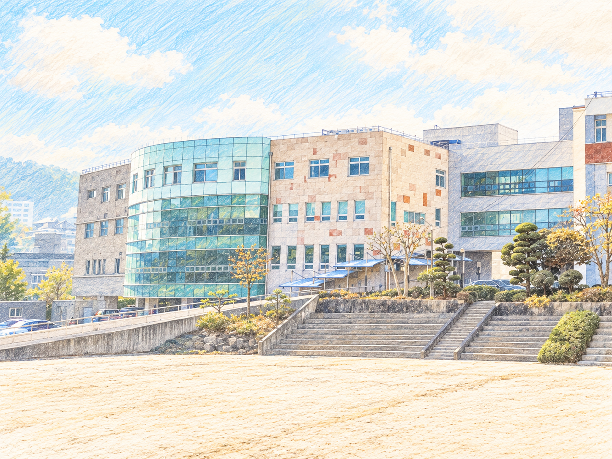
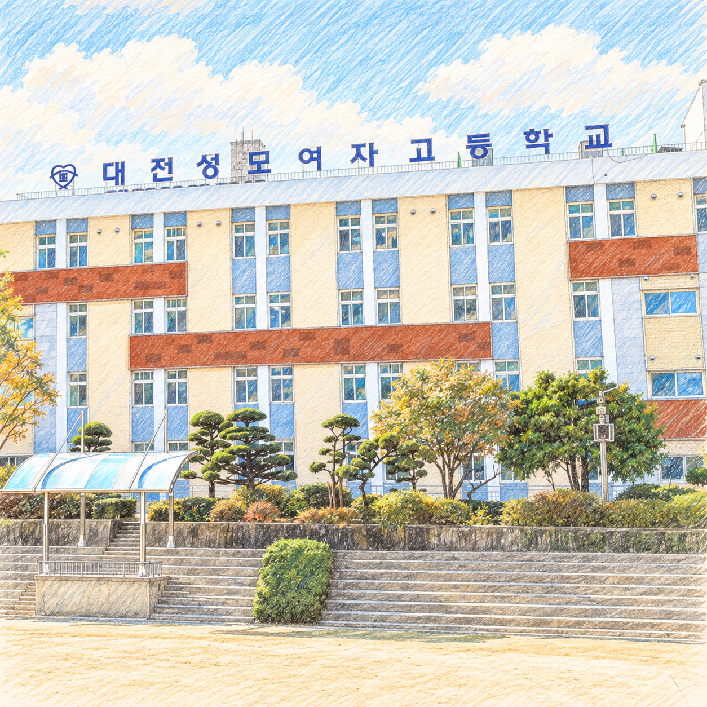
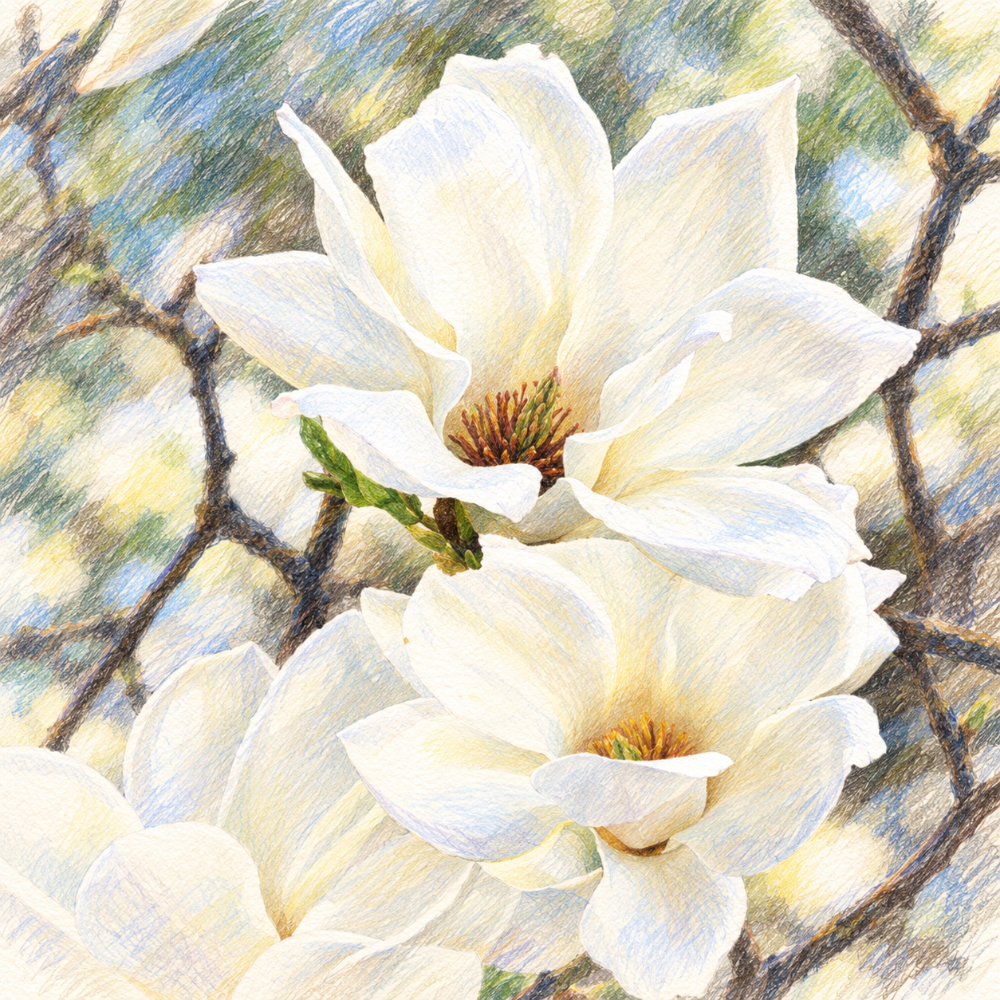
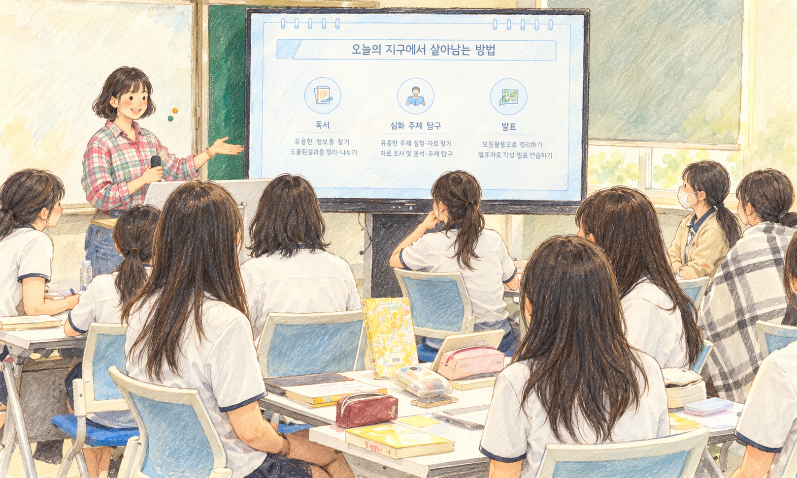
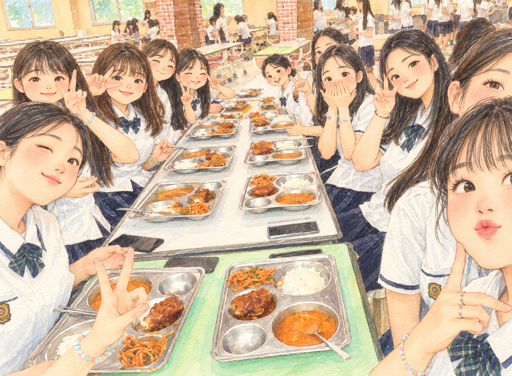
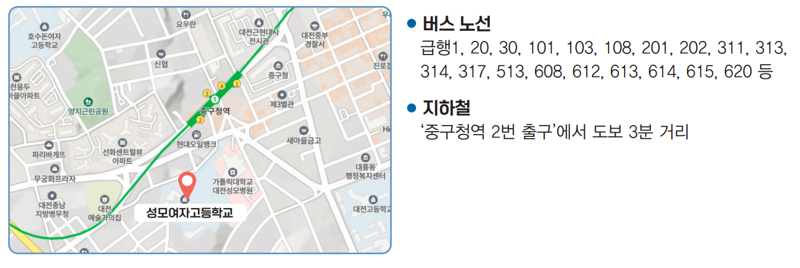

우리의 이야기가 시작되는 곳
“여러분도 성모여고에서 자신만의 속도로 크게 성장하길 응원합니다.”
내가 성모에 다닌다면,
이런 하루는 어떨까?
아침의 설렘부터 배움 사이의 쉼까지.
학교의 시간과 공간을 미리 만나보세요.


정규 수업 뒤에는, 나의 선택으로
방과후수업과 자기주도학습은 개인의 희망에 따라 참여합니다.
동아리 활동이 있는 날에는 좋아하는 것을 함께 탐구해요.
학교 공간과 일과시간표를 바탕으로 구성한 하루 소개입니다. 활동 일정은 학교 운영에 따라 달라질 수 있습니다.
교훈
정의와 진리와 사랑을 위하여 몸 바칠 여성
우리의 교육목표
바른 성품과 참된 지성이 조화를 이룬
현명한 실천인 육성
교목 · 설송 / 교화 · 목련
함께하는 우리
오래 기억하고 싶은, 성모의 순간들
나의 진로로 살펴보는
과목 선택
2027학년도 입학생 교육과정 기준
관심 분야를 고르면, 학년별 배움을 볼 수 있어요.
학교 편성표에 맞춘 과목 선택 예시를 안내합니다.
이름·학번은 필요하지 않습니다. 입력 내용은 서버에 전송하거나 저장하지 않습니다.
미리 가보는 대학: 전공·학과 체험
대학을 직접 방문해 학과 체험, 전공 강의와 캠퍼스 탐방에 참여합니다. 대학의 교육환경과 전공별 학문적 특성을 경험하며 나의 진로와 적성을 구체적으로 탐색하고, 진학과 진로 선택의 방향을 세워갑니다.
졸업생과 함께하는 고교학점제 멘토링 데이
학교를 찾아온 졸업생들이 과목 선택과 진로·진학 경험을 후배들과 나눕니다. 실제 대학 전공과 진로에 대한 이야기를 들으며, 자신의 흥미와 적성에 맞는 과목을 선택하고 미래를 설계할 동기와 자신감을 키웁니다.
진로진학 주제탐방단
관심 있는 진로 분야나 학문 주제를 중심으로 대학, 연구기관, 산업 현장을 탐방합니다. 실제 진로 환경을 체험하며 전공과 직업 세계를 이해하고, 자신의 진로 목표를 구체화하는 데 필요한 경험과 통찰을 얻습니다.
소개된 과목과 프로그램은 학교 운영에 따라 달라질 수 있습니다.
좋아하는 것을,
함께 좋아하는 친구들
책부터 실험, 무대와 운동장까지.
나의 관심사와 닮은 동아리를 만나보세요.
검색 결과가 없습니다
다른 검색어를 입력하거나 분야를 전체로 바꿔보세요.
동아리와 활동 내용은 학교 운영에 따라 달라질 수 있습니다.
배움 사이사이,
우리의 하루가 쌓이는 곳
함께 배우고, 스스로 도전하고,
서로를 응원하는 성모의 학교생활.
친구와 이야기를 나누는 작은 쉼표, 성모SUM
성모의 하루, 일과시간표
아침 조회부터 수업, 그리고 방과 후까지.
학교에서 보내는 하루를 살펴보세요.
전체 일과시간표 보기
수업과 함께하는 하루
| 교시 | 시간 | 소요 |
|---|---|---|
| 조회출석 체크 · 전달사항 안내 | 부터 | 10분 |
| 1교시 | 부터 | 50분 |
| 2교시 | 부터 | 50분 |
| 3교시 | 부터 | 50분 |
| 4교시 | 부터 | 50분 |
| 점심 시간식사 | 부터 | 60분 |
| 5교시 | 부터 | 50분 |
| 6교시 | 부터 | 50분 |
| 7교시 | 부터 | 50분 |
| 종례전달사항 안내 · 청소 | 부터 | 20분 |
방과 후, 나의 선택으로
| 교시 | 시간 | 소요 |
|---|---|---|
| 방과후수업 | 부터 | 50분 |
| 저녁 시간식사(신청자 부담) | 부터 | 60분 |
| 자기 주도 학습 1심화수업 or 자기주도적학습 | 부터 | 70분 |
| 자기 주도 학습 2심화수업 or 자기주도적학습 | 부터 | 75분 |
| 자기 주도 학습 3자기주도적학습 | 부터 | 50분 |
방과후 수업과 자기 주도 학습은 개인의 희망(선택)에 따라 진행합니다.
성모의 교복을
만나보세요
계절마다 다른 모습,
매일 함께할 우리의 교복.
교복을 표현한 캐릭터 일러스트입니다.
공부하고, 함께하고,
잠시 쉬어가는 공간
나에게 꼭 맞는 자리를 찾아볼까요?
그림을 누르면 더 크게 볼 수 있어요.
먼저 걸어간 선배가,
이제 시작할 너에게
졸업생의 응원 한마디.
성모에서의 추억과 새로운 출발을 향한 마음을 전합니다.
“성모여고는 여러분이 꿈을 발견하고 키워갈 수 있는 든든한 환경을 갖춘 학교라고 자신 있게 말할 수 있습니다.”
박○인 선배의 이야기 더 읽기
성모여고에서는 공부뿐 아니라 오래 기억에 남을 다양한 활동들을 경험할 수 있습니다.
지금 이 순간이 여러분의 가장 빛나는 ‘리즈’ 시기입니다. 이 소중한 시간을 배움과 즐거움으로 채워가길 바라며, 봄과 함께 활짝 피어날 여러분의 새로운 출발을 진심으로 응원합니다.
응원 글에서 발췌
“고등학교 생활을 두려워하기보다는 여러분만의 추억을 가득 쌓고, 후회없는 학창시절을 보내길 응원합니다!”
이○선 선배의 이야기 더 읽기
성모여고에 입학할 여러분, 너무 걱정하지 않으셔도 됩니다.
지금은 힘들어 보이겠지만, 옆에서 함께할 친구들 덕분에 그 시간들은 어느새 지나가 추억이 되고, 나중엔 웃으며 이야기하게 될 거예요. 저는 여러분이 성모여고에서의 고등학교 생활을 마음껏 즐기길 바랍니다.
응원 글에서 발췌
“성모여고는 여러분이 스스로 배우고 성장할 수 있도록 아낌없이 도와주는 학교입니다.”
전○연 선배의 이야기 더 읽기
학교에서 제공하는 프로그램들도 정말 많습니다. 방과후 수업, 외부 체험활동, 다양한 학과 설명회까지 다양하게 참여해 보시길 추천합니다. 생각보다 얻는 것이 크고 진로 탐색에도 많은 도움이 됩니다.
신입생 여러분의 새로운 도전을 진심으로 응원합니다. 행복한 고등학교 생활 보내세요!
응원 글에서 발췌
“여러분도 성모여고에서 자신만의 속도로 크게 성장하길 응원합니다.”
신○아 선배의 이야기 더 읽기
특히 3학년 입시 기간에는 선생님들의 도움이 정말 큰 힘이 되었습니다. 성적 관리와 면접 준비는 물론, 불안하고 힘든 시기마다 멘탈적인 부분까지 세심하게 챙겨주셔서 버틸 수 있었어요.
특히 학생을 끝까지 배려하고 존중하는 성모여고에서 지낸 시간은 제게 큰 자부심으로 남아 있습니다.
응원 글에서 발췌
“여러분도 성모여고에서 자신의 잠재력을 마음껏 펼치며, 밝고 행복한 고등학교 생활을 만들어가길 진심으로 바랍니다.”
백○민 선배의 이야기 더 읽기
제가 성모여고에서 가장 큰 도움을 받았던 부분은 선생님들과의 꾸준한 상담이었습니다.
무엇보다 성모여고에서 만난 선생님들과 친구들은 저의 고등학교 생활을 따뜻한 추억으로 남겨주었습니다. 함께 공부하고, 고민을 나누며, 서로에게 힘이 되어준 시간들이 지금도 종종 그리울 만큼 소중합니다.
응원 글에서 발췌
제공된 졸업생 응원 글에서 발췌했습니다. 대학·학과는 원문 작성 당시 기준이며, 사진은 인물의 얼굴을 단순화한 일러스트로 재구성했습니다.
진로를 아직 정하지 못했어도 괜찮나요?
네. 관심과 적성을 탐색하는 과정부터 과목 선택, 진학 준비까지 개인별 진로 상담을 통해 함께 고민합니다. 다양한 체험과 멘토링으로 관심 분야를 찾아보세요.
어떤 선택과목을 배울 수 있나요?
인문·사회, 수학·과학, 외국어, 예술·체육 등 관심 분야의 과목을 탐색할 수 있습니다. 공동교육과정과 소인수 교육과정 등도 소개하고 있습니다. 실제 개설 과목은 학교의 교육과정 안내를 확인해 주세요.
어떤 동아리가 있나요?
인문·교육·사회, 외국어·국제교류, 봉사·보건의료, 수학·과학·공학, 방송·예술·체육 분야의 동아리를 소개합니다. 위의 동아리 검색에서 이름이나 관심 활동으로 찾아보세요.
무감독 시험에는 어떤 의미가 있나요?
학생을 믿는 마음을 바탕으로, 스스로 정직을 실천하고 자신의 선택에 책임지는 자세를 배우는 양심 교육입니다.
공부하거나 쉴 수 있는 공간이 있나요?
꿈다락 도서관, 카페on종일, 자기주도적 학습 공간에서 공부하고, 학생 휴게 공간 성모SUM에서 친구들과 쉬어갈 수 있습니다. 공간 둘러보기에서 사진을 확인해 보세요.
성모로 오시는 길
대전성모여자고등학교에서 만나요.

지하철로 오실 때
중구청역 2번 출구
학교까지 도보 약 3분
버스로 오실 때
급행120, 30, 101, 103, 108, 201, 202, 311, 313, 314, 317, 513, 608, 612, 613, 614, 615, 620 등
(34943) 대전광역시 중구 대흥로 62
교무실 교무센터042-220-7815
첨부 자료 기준의 교통 안내입니다. 이용 전 노선과 운행 정보를 확인해 주세요.